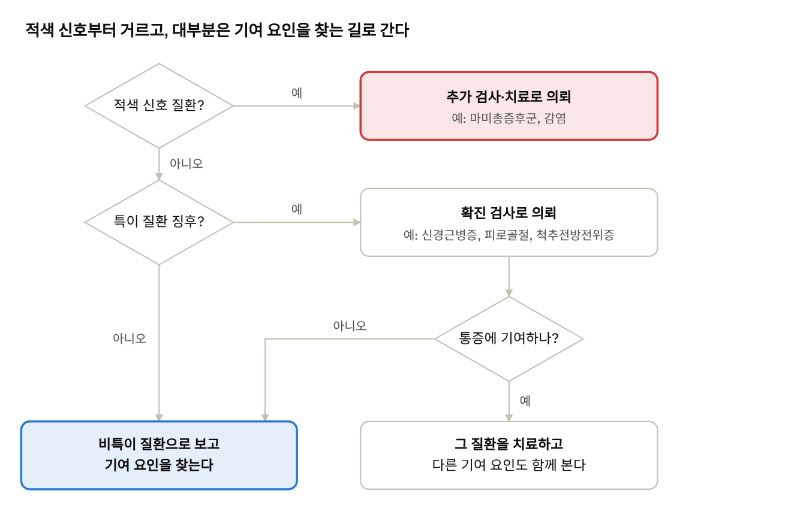
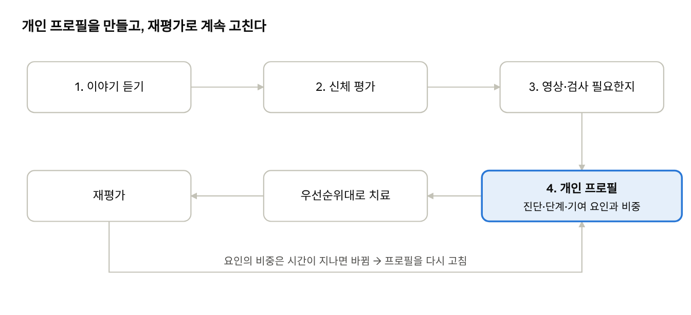
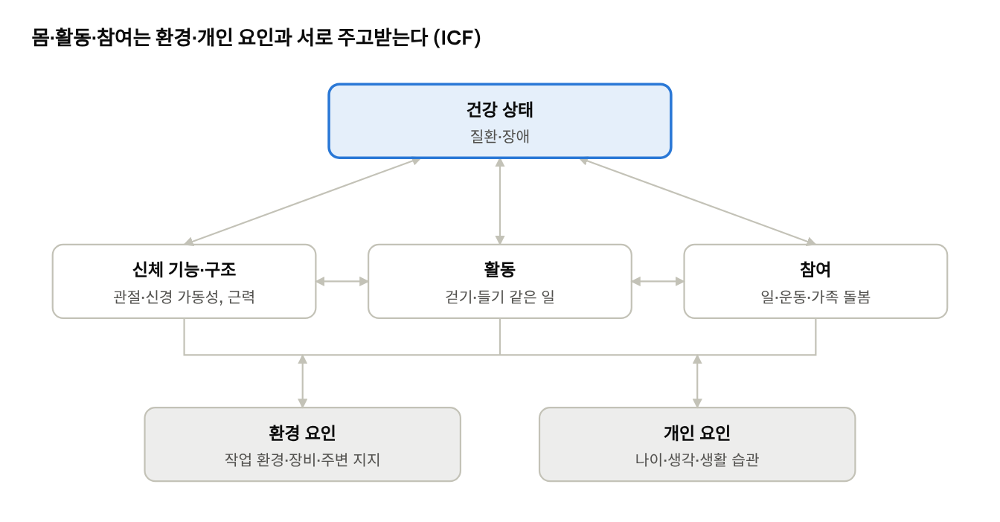
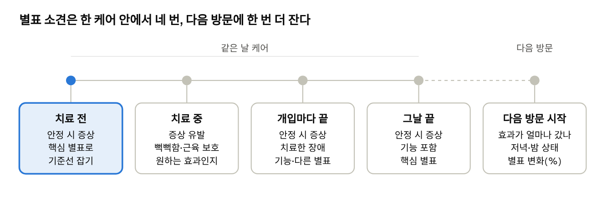
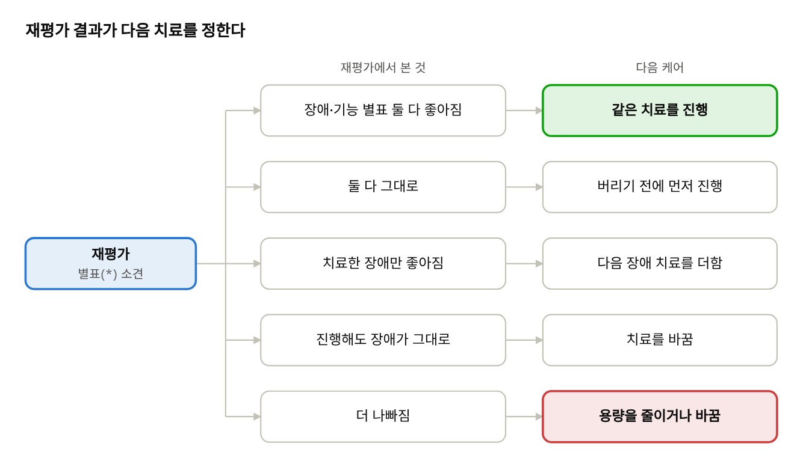

임상추론 강의 정리 노트
세 강의를 듣고 핵심만 제 말로 줄인 학습 노트입니다. 강의 슬라이드·그림을 옮기지 않았고 번역본도 아닙니다. 도식 5개는 이 노트를 위해 새로 그렸습니다. 「원본 슬라이드 ○쪽」은 원 강의와 대조할 때 쓰는 표시입니다. 강의 내용의 권리는 각 강사와 기관에 있습니다. 개인 진단·치료 안내가 아닙니다.
PDF로 받기| 번호 | 강의 | 강사 | 원본 | 분량 |
|---|---|---|---|---|
| 1 | A framework for optimising the patient interview & clinical outcomes | Tim Mitchell (호주 근골격계 전문 물리치료사, 요통 박사) | 강의 슬라이드 | 156쪽, 7개 모듈 |
| 2 | Introduction to Clinical Reasoning | Harry Truong (남호주대학교 강사) | 강의 슬라이드 | 31쪽 |
| 3 | Procedural Reasoning | Mark A. Jones (남호주대학교 겸임 선임강사) | 강의 슬라이드 | 6쪽 |
영어 용어는 괄호에 남겨 원본과 대조할 수 있게 했습니다. 인용 문헌 수치는 강의에 나온 그대로이며, 강의 자료 밖에서 다시 확인하지는 않았습니다.
1. 환자 문진과 임상추론 프레임워크 (Tim Mitchell)
핵심은 「같은 진단이라도 사람마다 아픈 이유가 다르다」입니다. 문진에서 그 사람의 이야기를 들어 진단 · 단계 · 기여 요인으로 개인 프로필을 만들고, 그 비중에 따라 치료 순서를 정합니다. 참고 사이트: musculoskeletalframework.net
모듈 1. 왜 프레임워크가 필요한가
원본 슬라이드 4~24쪽 · 세 유형 그림 13쪽, 가이드라인 10쪽
흔한 근골격계 통증도 일반적인 치료로 잘 낫지 않는 사람이 적지 않습니다. 예: 신경근 자극 징후가 있는 목·팔 통증에 약·휴식·도수치료·MRI·주사를 다 해도 오르내리기만 한 사례.
가이드라인 기반 돌봄: 환자 중심, 적색 신호 선별, 심리사회 위험 평가, 영상 검사는 신중하게, 신체 평가, 결과 추적, 조기 운동, 비수술 치료 우선, 일 참여 격려.
같은 통증도 세 유형으로 나뉩니다.
| 유형 | 통증과 생활 부하의 관계 | 그 밖의 영향 | 가이드라인 기본 치료로 |
|---|---|---|---|
| 1 | 부하와 직접 연결(말초 상해수용 통증) | 거의 없음 | 잘 회복 |
| 2 | 부분적으로 연결 | 습관적 움직임, 수면, 피로, 건강, 스트레스 | 회복이 더딜 수 있음 |
| 3 | 상시 통증 + 부하로 악화 | 위 요인 + 통증이 넓게 퍼지고 자극보다 반응이 큼(중추 증폭) | 잘 회복하기 어려움 |
같은 국소 요통도 이야기가 다르면 치료 순서가 달라집니다. 스트레스·수면 부족이 크면 교육 → 운동 협의 → 수면 위생, 재택근무 자세가 크면 교육 → 작업 환경 조정 → 운동 협의 순.
요통·경부통의 사회적 부담은 치료가 부족해서가 아니라, 가치 낮은 치료가 많아서 커진다는 것이 강의의 문제의식입니다.
모듈 2. 통증 이해하기
원본 슬라이드 25~45쪽 · IASP 정의 30쪽, 통증 종류 34쪽, 기계적/비기계적 35쪽, 민감화 38쪽
치료사가 통증을 아는 것보다 환자가 자기 통증을 어떻게 이해하는지 아는 것이 더 중요합니다. 같은 무릎 염좌도 「조금 쉬고 천천히 늘리면 된다」는 도움이 되고, 「엄마처럼 될까 봐 조심해야 한다」는 방해가 됩니다(helpful / unhelpful).
IASP 정의 요지: 통증은 실제 또는 가능한 조직 손상과 관련된 불쾌한 감각·정서 경험입니다. 통증은 항상 개인적 경험이고, 상해수용(nociception)과 같지 않으며, 환자의 통증 호소는 존중해야 합니다.
통증 종류: 상해수용성(nociceptive, 염증성 포함), 신경병증성(neuropathic), 통각변조성(nociplastic), 혼합형.
기계적 통증(mechanical): 특정 움직임·자세에 따라 생기고, 자극에 비례합니다. 비기계적 통증: 상시·안정 시에도 있고, 반응이 자극보다 훨씬 큽니다.
민감화(sensitisation) 확인: 움직임·자세·부하·촉진·감각 자극·스트레스에 얼마나 쉽게 아픈지, 국소인지 넓게 퍼졌는지, 병력·단계에 비춰 말이 되는지, 무엇이 더 키우는지. 예: 민감도가 낮으면 악화가 금방 가라앉고, 높으면 계단 한 층에도 하루 종일 아픔니다.
강사 정리: 통증은 치료사와 환자 모두에게 말이 되어야 하고, 그 이해는 환자의 이야기(어떻게 시작됐는지 · 어떻게 변하는지 · 무엇이 영향을 주는지 · 환자에게 무슨 의미인지)에서 나오며, 설명보다 직접 해 보게 할 때 더 잘 이해됩니다.
모듈 3. 환자의 이야기 이해하기
원본 슬라이드 46~64쪽 · 우선순위 치료 계획 55쪽
시작 방식 4가지 + 적색 신호: 외상, 특정 사건, 반복 사용·과부하, 서서히(insidious). 시작 전에 몸을 미리 민감하게 만든 요인(pre-sensitise)이 있었는지도 묻습니다.
사례(12주 무릎 앞 통증)의 포인트는 사실마다 「그때 어떻게 생각했는지」를 함께 묻는 것입니다.
어떻게 시작됐나요? / 그때 무엇이 문제라고 생각했나요?
(보상 지연 등) 그게 어떤 느낌이었나요?
영상 검사 결과를 어떻게 이해하고 계세요?
수술 뒤 몸은 어떻게 반응했나요? / 지금은 무엇이 문제라고 생각하세요?
일상 움직임은 어떻게 버티고 계세요? (설문에서 수면·회복 자신감 확인)
우선순위 치료 계획 예: 인지(생각) → 기능 행동(도움 안 되는 움직임, 체력 저하) → 통증 관리 → 정서 → 일.
상담 기술: 환자가 하려는 말을 끊지 않기. 강의가 인용한 연구에서 의사는 평균 11초 만에 끊었고, 끊지 않으면 환자는 평균 6초만 더 말했습니다. 「오늘 가장 원하는 것」(agenda)을 묻는 비율도 낮았습니다.
모듈 4. 진단은 중요한가
원본 슬라이드 65~86쪽 · 진단 분류 흐름도 81쪽
중요하지만 과잉진단도 문제입니다. 해가 없을 상태에 이름을 붙여 환자를 불안하게 만들 수 있습니다.
진단이 가장 중요할 때: 적색 신호 질환(말총신경증후군, 감염), 진단이 치료를 분명히 정해 주는 특이 질환(류마티스 관절염, 골절).
요통의 한계: 장애를 남기는 요통 가운데 특정 척추 병리는 약 5~10%, 90~95%는 한 가지 해부학적 원인을 정확히 집어내기 어렵다고 강의는 정리합니다.
같은 무릎 내측 통증도 「염좌, 퇴행성 반월상파열, 슬개대퇴 통증, 관절염, 비특이 무릎 통증」처럼 여러 이름이 붙을 수 있고, 이름에 따라 환자가 받아들이는 마음이 달라집니다.
ICD-11 만성 통증 분류(만성 일차성 통증, 수술·외상 후, 신경병증성, 두통·구강안면, 근골격계)는 「마음의 문제」로 밀려난 환자에게 정당한 이름을 주고 다중 치료로 이어 주는 데 도움이 됩니다.
진단 분류 흐름:
적색 신호 질환이 있는가? → 있으면 추가 검사·치료로 의뢰.
특이 질환의 징후가 있는가? → 있으면 확진 검사로 의뢰.
그 특이 질환이 지금 통증에 기여하는가? → 예: 그 질환 치료 + 다른 기여 요인도 함께 본다. 아니오: 비특이 질환으로 보고 프레임워크의 기여 요인을 찾는다.
단계(stage)도 봅니다. 단순히 급성→만성 시간순이 아니고, 조직 손상 없는 통증도 있습니다. 만성 = 「예상 치유 기간을 넘긴 통증」.

적색 신호와 특이 질환을 맨 먼저 걸러 내고, 남는 대부분은 비특이 질환으로 보고 기여 요인을 찾습니다. 원본 흐름도는 슬라이드 81쪽에 있습니다.
모듈 5. 심리사회 요인 풀어 보기
원본 슬라이드 87~107쪽 · 심리사회 요인 분류 92쪽, 외레브로 단축형 설문지 100쪽
심리사회 = 인지(생각·믿음·기대·자기효능감·파국화·대처) + 정서(우울·불안·스트레스·두려움·분노) + 사회(문화·교육·관계·건강 이해력·경제 상황).
요통·산재만의 문제가 아닙니다. 강의가 인용한 체계적 문헌고찰에서 ACL 재건술 후 스포츠에 복귀하지 않은 사람의 다수가 심리적 이유, 그중에도 재부상 두려움을 꼽았습니다.
역할 세 가지: ① 증상 시작 전에 몸을 미리 민감하게 만듦(부하 변화 없이도 아플 수 있는 이유) ② 증상을 오래가게 하거나 키움(움직임 회피, 근육 긴장, 통증에 주의 집중) ③ 치료 참여와 회복 걸림돌(지지 부족, 일·사회 요인, 음주·흡연).
선별 도구: 외레브로 근골격계 통증 선별 설문 단축형(Örebro short form, 10문항: 통증 기간·강도·일·수면·긴장·우울·만성화 위험 인식·복귀 기대·통증 믿음 2문항).
같은 증상(35세 벽돌공, S1 신경근 증상)이라도 인지·정서·사회 요인에 따라 양상이 달라질 수 있다는 토론 사례가 들어 있습니다.
모듈 6. 움직임과 기능 해석하기
원본 슬라이드 108~126쪽 · 도움이 되는/안 되는 반응 117~119쪽, 기능 행동 4유형 121쪽 전후
통증에 대한 운동 반응은 세 가지 원인에서 나옵니다: 통증 자체, 통증에 대한 위협·두려움(「인대가 끊어진 것 같다」), 통증 관련 고통(얕은 호흡, 전신 긴장, 안절부절못함).
안전 행동(손으로 짚기, 부하 피하기, 계속 만져 보기)과 의사소통 행동(얼굴 찡그리기)을 구분해 봅니다.
도움이 되는 반응과 도움 안 되는 반응을 가르는 기준: 움직임을 정상으로 돌려 보았을 때 증상이 늘면 도움이 되는 반응(adaptive), 줄면 도움 안 되는 반응(mal-adaptive). 급성기에 도움이 됐던 반응도 시간이 지나면 안 되는 반응으로 바뀔 수 있습니다.
| 기능 행동 유형 | 뜻 | 도움이 되는 예 | 도움 안 되는 예 |
|---|---|---|---|
| 움직임 제한 | 아픈 방향으로 능동·수동 모두 막힘 | 염증·급성 외상으로 목이 안 돌아감 | 병리 없는 6개월 전 목 염좌, 근육을 풀면 덜 아픔 |
| 조절 장애 | 범위는 정상, 움직임 조절이 달라진 채 아픔 | 급성 염증 어깨, 교정하면 더 아픔 | 만성 충돌 어깨, 교정하면 덜 아프고 기능이 좋아짐 |
| 통증 행동 | 통증·예상 통증에 대한 행동 | 급성 요추 신경근병증의 안전 행동 | 신경 정상·병리 없는데 두려움으로 피함 |
| 체력 저하 | 근력·지구력·체력 감소 | 급성 인대 손상 후 고정기 | 만성 발바닥 통증으로 쉬기만 하다 약해짐 |
모듈 7. 하나로 묶기
원본 슬라이드 127~156쪽 · 레이더 그래프 132쪽, 사례 우선순위 149쪽

기여 요인은 통증의 시작과 지속 모두에 관여하고, 바꿀 수 있는 것과 없는 것, 보호하는 요인까지 함께 봅니다.
요인의 비중은 시간이 지나면 바뀝니다. 그래서 계속 다시 평가하고, 강의는 레이더 그래프로 환자와 함께 보는 방법을 예로 듭니다.
사례(19세 남성, 청소년기 요추 피로골절 후 지속 요통·정신 건강 문제): 우선순위를 인지 → 정서 → 사회 → 기능 행동 → 통증 → 일 → 전인 순으로 두고, 「평가가 곧 교육」(신경 검사·부하를 줄여 움직여 보기), 초기 손상 인정과 「지금은 그 병리가 주된 문제가 아니다」는 안심, 환자가 의미를 두는 계획을 함께 정했습니다. 강의에 따르면 3회 뒤 주 3회 헬스를 한 달 이어 갔고, 외레브로는 63점에서 39점, 오스웨스트리는 24%에서 14%로 줄었습니다(약물 치료 병행).
마무리: 프레임워크는 자세한 길안내가 아니라 방향을 잡는 지도이며, 사용법은 여러 가지이고 익숙해지는 데 시간이 걸립니다.
2. 임상추론 입문 (Harry Truong)
임상추론은 환자와 함께 환자·상황·문제를 이해하려는 되돌아보는 탐구 과정입니다. 강의는 빠른 추론의 오류를 줄이고, 진단적 추론과 이야기 추론을 함께 쓰며, 가설 범주로 정보를 정리하라고 가르칩니다. 기본 교재는 Jones & Rivett, 「Clinical Reasoning in Musculoskeletal Practice」 2판(2019).
치료사의 생각 방식 세 가지
| 방식 | 모습 | 특징 |
|---|---|---|
| 기술자형 | 처방·프로토콜을 그대로 수행 | 임상추론 없음 |
| 빠른 추론(fast, 패턴 인식) | 눈에 띄는 특징과 습관으로 판단 | 익숙한 문제에 효율적, 오류 가능성 큼 |
| 느린 추론(slow, 가설 검증) | 자료로 돌아가 가설을 확인·반증 | 초보자·낯선 문제에 쓰임, 신체·심리사회·환경을 함께 봄 |
빠른 추론의 흔한 오류
원본 슬라이드 4~5쪽
점화(priming): 의뢰서 진단, 영상 소견, 최근 본 논문·강좌에 끌려감.
확증 편향: 이미 세운 가설을 뒷받침하는 자료만 모음.
기억 편향: 한 번 크게 성공한 사례에 지나치게 기대.
대표성 과대평가: 「이 소견이 있으면 이 진단」과 「이 진단이면 이 소견」을 혼동.
고집: 맞지 않는 자료가 나와도 처음 인상을 바꾸지 않음.
연상 일관성: 증상·병리·활동 제한을 검증 없이 그럴듯한 이야기로 이음. 예: 수평 굴곡에서 견봉쇄골관절(AC)이 아프니 원인은 AC라고 단정 — 다른 구조에서 온 통증일 수 있음.
줄이는 법: 환자 말의 뜻을 되물어 확인하기(「척추가 닳아서 아프다」는 어디서 들은 말인지), 환자가 말하지 않은 증상·활동 제한·할 수 있는 것을 따로 물어 빠짐없이 확인하기.
ICF와 생물심리사회 모델
WHO 국제기능·장애·건강분류(ICF): 건강 상태 → 신체 기능·구조 / 활동 제한 / 참여 제약, 그리고 환경 요인·개인 요인이 서로 영향을 주고받습니다.
병리해부학 모델은 수술·시술 결정에는 여전히 필요하지만, 많은 경우 확정적 진단이 없습니다. 그래서 심리(불안·두려움·우울·파국화·자기효능감), 사회(직무 만족·지지·업무 스트레스), 개인(유전·활동량·흡연·비만·동반 질환)을 함께 봅니다.

통증 하나도 몸의 장애에서 끝나지 않고 활동·참여, 환경·개인 요인과 함께 봅니다. 원본 그림은 Harry Truong 슬라이드 7쪽과 13쪽에 있습니다.
진단적 추론 vs 이야기 추론
원본 슬라이드 9~12쪽
| 진단적 추론(diagnostic) | 이야기 추론(narrative) | |
|---|---|---|
| 목표 | 문제를 이해 | 사람을 이해 |
| 보는 것 | 병리 기전, 신체 장애, 구조·원천, 기여 요인 | 이야기, 통증·장애 경험, 관점, 그 관점의 근거 |
| 이어지는 치료 | 절차적 관리(치료 기법) | 교육적 관리 |
이야기 추론에서 물을 것: 자기 상태를 어떻게 이해하는지, 어떻게 버티는지, 치료에 무엇을 기대하는지, 얼마나 위협으로 느끼는지, 남들이 자기를 어떻게 본다고 생각하는지, 남과 비교해 상실감이 있는지, 통증 때문에 활동·사람을 피하는지. 마지막은 단계적 노출·속도 조절(pacing)의 단서가 됩니다.
관계·자아·정신 건강처럼 깊은 문제는 치료사가 알아보고, 환자·의뢰 의사와 상의해 심리 전문가에게 연결하는 것까지가 몫입니다.
흔한 실수: 심리사회를 아예 안 보거나 겷핑기만 봄, 환자가 말하지 않으면 없다고 봄, 첫 날 성급하게 판단, 생물과 심리사회를 둘 중 하나로 봄, 교육을 한쪽으로만 함, 설명한 뒤 이해했는지 다시 확인하지 않음. 인지행동 전략은 환자「에게」 쓰는 것이 아니라 환자「와 함께」 고릅니다.
가설 범주 (hypothesis categories)
원본 슬라이드 13~25쪽
문진·신체 평가에서 나온 정보를 아래 범주에 나눠 담습니다. 한 가지 정보로 판단하지 않고, 모든 정보를 모아 종합하며, 한 정보는 여러 범주에 동시에 들어갈 수 있습니다.
| 범주 | 보는 것 |
|---|---|
| 활동·참여 능력/제한 | 못 하는 것(목표)과 아직 할 수 있는 것(재훈련 출발점) 모두 |
| 환자 관점 | 이해·믿음·감정. 「통증 = 손상」 믿음은 회피·장애를 키움. 불안, 자기효능감, 질병 도식(이름·경과·원인·통제 가능성) |
| 통증 유형 | 상해수용성(염증 포함) / 신경병증성(말초·중추) / 통각변조성. 신경병증성은 신경 질환 병력, 신경해부학적으로 맞는 분포, 타는·찌르는 양상으로 가름 |
| 증상의 원천 | 부위·양상·깊이·발생 기전·검사·양상 변화·신체 평가·치료 반응이 단서. 근골격계에서는 임상 검사만으로 정확히 집기 어려움 |
| 병리·병태생리 | 우세한 통증 유형에 비춰 해석. 정확한 구조를 모르더라도 장애는 치료 가능. 심각한 병리 선별은 필수 |
| 신체 기능·구조 장애 | 심리(황색 신호)·생리·신체(관절·신경 가동성, 근 길이, 운동 조절) |
| 기여 요인 | 신체(자세·유연성·근력·생활 습관), 환경(작업 환경·장비), 심리사회. 중추 민감화가 우세하면 기여 요인에 치료 초점 |
| 주의·금기 | 병리의 성질·안정성·단계, 동반 질환, 통증 유형, 심각도·과민성(irritability), 적색 신호 → 검사·치료 범위와 강도 결정 |
| 치료 선택·진행 | 정해진 처방 없음. 근거 + 문진·신체 평가 추론 + 재평가. 장애 지표와 기능 지표를 함께 추적 |
| 예후 | 문제의 성질·범위, 기여 요인, 동반 질환, 변화하려는 의지·능력, 병력 길이, 과민성 |
오류를 줄이고 실력을 키우는 법
임상추론의 바탕: 지식(정상·비정상), 인지(문제 해결 과정), 메타인지(자기 생각을 되돌아봄).
진단적 추론의 흔한 오류: 처음 개념을 잘못 잡음(진단을 받아왔을 때 흔함), 가설을 너무 적게 세움, 좋아하는 패턴만 봄, 반대 소견 무시, 경쟁 가설을 반증하지 않음, 원천만 보고 원인·기여 요인은 못 봄, 결과를 추적하지 않아 진행이 기계적.
문진 순서: 주호소 → 생활 습관 → 일상 기능 → 악화 요인 → 완화 요인 → 24시간 양상 → 병력. 신체 평가: 자세·움직임·관절·신경·근육·조직 손상·특수 검사.
모든 질문과 검사의 목적을 알고 하고, 임상추론 양식(되돌아보기 서식)으로 사고 순서를 기록합니다.
전문가가 되기까지 흔히 10년을 말하지만 누구나 되는 것은 아닙니다. 최신 문헌 읽기, 비판적 자기 성찰을 글로 남기기, 사례 토론, 추론 서식 연습이 길입니다. 자기 가정은 혼자 보기 어렵기 때문에 동료·스승·환자와 함께 되돌아봅니다.
3. 절차적 추론 (Mark Jones, 2022년 8월 한국 강의)
절차적 추론(procedural reasoning)은 전체 관리 계획과 치료의 선택·시행·재평가·진행을 정하는 판단입니다. 강의의 핵심은 「한 번에 하나만 바꾸고, 표시해 둔 주요 소견으로 매번 다시 재라」입니다. 임상추론의 초점은 진단·이야기·절차·상호작용·협력(공동 의사결정)·예후·윤리로 나뉩니다.
노이즈: 같아야 할 판단이 사람마다 다름
카너먼 등의 「노이즈」(2021) 개념을 빌려, 전문가 판단의 편차가 크다는 연구들을 보여 줍니다(판사 양형, 영상 판독, 의사 진단 등).
물리치료도 같습니다. 강의가 인용한 연구에서 요통 분류·치료 판단의 일치도는 체계와 숙련도에 따라 넓게 달랐고, 적색 신호(예: 심부정맥혈전) 인식도 자주 놓쳤습니다. 심리사회·기여 요인·치료 선택·예후 판단의 노이즈는 아직 연구가 부족합니다.
편차의 뿌리는 인지 편향(점화, 확증 편향 등)입니다. 임상 가이드라인은 편차를 줄이지만 넓은 틀일 뿐이라, 경험·환자 선호·환자별 소견과 합쳐 적용합니다(강의는 요통 운동·도수치료 가이드라인 George et al. 2021을 예로 듭니다).
치료 선택: 무엇부터, 어떻게
상해수용성 우세일 때 도수·운동 치료의 선택과 용량은 가이드라인을 본 뒤 환자에 맞춥니다: 단계(급성·아급성·만성), 염증성 vs 기계적 양상, 환경 기여 요인, 신체 평가 장애(운동 조절·근력, 관절 가동성과 통증-저항 관계, 연부조직, 신경역학), 장애와 활동·목표의 관계, 시험 치료 뒤 즉시 재평가.
원천을 치료할지 기여 요인을 치료할지에 대한 근거는 없습니다. 환자의 활동·참여 제한·목표와 가장 관련된 장애부터 치료합니다. 「미니 치료」로 여러 개입을 비교해 볼 수 있고, 시간·부하가 핵심이면 조절·근력, 그와 무관한 제한이면 움직임 치료로 갑니다.
한 번에 다 치료하지 않습니다. 개입이 많으면 무엇이 도움됐고 무엇이 악화시켰는지 알 수 없습니다. 가장 중요한 장애부터.
재평가: 별표(*) 소견으로 매번 확인
원본 슬라이드 4쪽
문진·신체 평가에서 주요 소견에 별표(*)를 해 두고(통증 부위·강도, 주요 활동·참여 제한, 목표와 연결된 기능, 주요 신체 장애) 아래 시점마다 다시 쟽니다. 장애 지표는 환자가 말하는 기능과 상관이 약해서, 기능 지표도 함께 봅니다.

치료를 이어갈지, 바꿀지, 더할지
치료한 장애와 기능 별표가 좋아졌다 → 같은 치료를 진행(더 길게·강하게·다른 자세로, 자가 치료로, 운동은 부하·기능성을 늘림).
별표도 치료한 장애도 그대로다 → 버리기 전에 먼저 진행해 본다.
치료한 장애는 좋아졌는데 다른 별표는 그대로다 → 다음으로 중요한 장애에 치료를 더한다.
진행해도 치료한 장애가 안 좋아진다 → 치료를 바꾼다.
더 나빠졌다 → 용량을 줄이거나 바꾼다. 치료에 비해 지나치게 나빠졌다면 과민성을 잘못 본 것이니 통증을 줄이는 치료로 바꾼다.

매 케어 끝과 다음 케어 시작에 별표 소견을 다시 재고, 그 결과에 따라 이어갈지·더할지·바꿀지를 정합니다. 원본은 Mark Jones 슬라이드 4쪽에 있습니다.
통증 우세 vs 뻑뻑함+통증
원본 슬라이드 4~5쪽
| 통증 우세 | 뻑뻑함 + 통증 | |
|---|---|---|
| 알아보는 법 | 과민(쉽게 유발·활동을 멈춤·금방 가라앉음), 염증 양상(야간통, 20분 넘는 아침 강직), 안정 시 통증, 통증으로 능동 운동 제한, 수동 검사 때 저항보다 통증이 먼저 | 비과민, 움직임·자세·부하에만 증상(기계적), 안정 시 통증 없음, 수동 검사 때 통증보다 저항이 먼저 |
| 교육 | 통증의 보호 역할, 부하를 줄이며 활동 유지 | 뻑뻑함 때문에 아프니 뻑뻑함을 치료 |
| 치료 | 통증을 조절하는 부드러운 수동·연부조직·이완, 아프지 않은 부위의 기여 요인 치료(예: 과민한 목에 뻑뻑한 흉추), 통증을 유발하지 않는 홈 운동 | 뻑뻑함 안쪽까지 운동하되 통증은 최소로, 강하게 한 뒤에는 통증 없는 큰 진폭으로 마무리 |
근육 기능 치료
통증 우세일 때의 시작: 운동 상상, 아프지 않은 자세에서 가벼운 등척성 수축, 통증 직전까지의 능동 움직임, 이완을 돕는 연부조직·등척성 수축, 아프지 않은 약한 부위 운동(무릎이 아플 때 둔근).
통증에 막히지 않을 때: 인식 → 활성화 → 근력 → 지구력 → 기능적 운동 조절 순으로 올리고, 부하·자세·범위·시간·횟수·기능 다양성·불안정 표면으로 난도를 높입니다.
심리사회 요인을 다루는 네 가지
원본 슬라이드 5~6쪽
치료적 통증 신경과학 교육
인지를 겨냥한 활동·운동 — 통증이 아니라 시간·횟수로 양 정하기, 목표는 환자가 정하기, 운동에 대한 생각 물어보기, 다음 단계 전에 운동 상상, 두려운 움직임에 단계적 노출, 스트레스 상황에서도 운동해 보기(Nijs et al. 2015).
복직 돕기
다른 전문가(심리 전문가 등)에게 의뢰
속도 조절·단계적 노출: 환자가 더 하고 싶은 활동을 고르고, 아파도 악화되지 않는 기준선을 찾고, 진행을 미리 계획합니다. 「아프면 멈춰라」도 「아파야 느는다」도 쓰지 않고, 악화는 손상이 아니라 민감화라는 점을 다시 설명합니다.
더 배울 접근법: 마이틀랜드, 맥켄지, 사만(운동계 장애), 인지기능치료(O'Sullivan), 근육 손상·건병증·인대 손상 재활.
4. 세 강의를 묶어 교육에 쓰기
세 강의는 한 흐름입니다. 문진으로 사람과 통증을 이해하고(1번), 가설 범주로 정리해 판단 오류를 줄이고(2번), 별표 소견으로 치료를 고르고 진행합니다(3번). 아래는 인턴십·사내 교육에서 바로 쓸 수 있게 줄인 것입니다.
문진 체크리스트
이스포츠 현장에 대입하면 (제안)
선수의 손목·목·허리 통증도 1번의 세 유형으로 나눠 보면, 연습 부하와 직접 연결된 유형과 수면·스트레스가 섞인 유형을 가를 수 있습니다.
일일일지의 「다음 케어에서 볼 것」은 3번의 별표 소견과 같은 역할입니다. 다음 방문 시작 때 변화를 다시 재면 치료 진행 판단이 나옵니다.
한 케어에 기법을 너무 많이 쌓지 않아야 무엇이 효과가 있었는지 기록으로 남습니다.
용어집
| 영어 | 이 노트의 한국어 |
|---|---|
| clinical reasoning | 임상추론 |
| diagnostic / narrative / procedural reasoning | 진단적 / 이야기 / 절차적 추론 |
| hypothesis categories | 가설 범주 |
| nociceptive / neuropathic / nociplastic pain | 상해수용성 / 신경병증성 / 통각변조성 통증 |
| sensitisation | 민감화 |
| contributing factors | 기여 요인 |
| irritability | 과민성(쉽게 악화되는 정도) |
| adaptive / mal-adaptive | 도움이 되는 / 도움 안 되는 |
| safety behaviour | 안전 행동 |
| deconditioning | 체력 저하 |
| self-efficacy | 자기효능감 |
| catastrophising | 파국화 사고 |
| priming / confirmation bias | 점화 / 확증 편향 |
| asterisk signs | 별표(*) 소견 |
| pacing / graded exposure | 속도 조절 / 단계적 노출 |
| red flag / yellow flag | 적색 신호 / 황색 신호 |